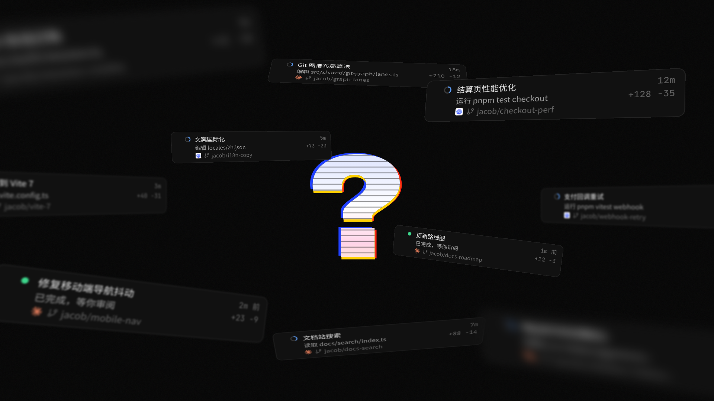
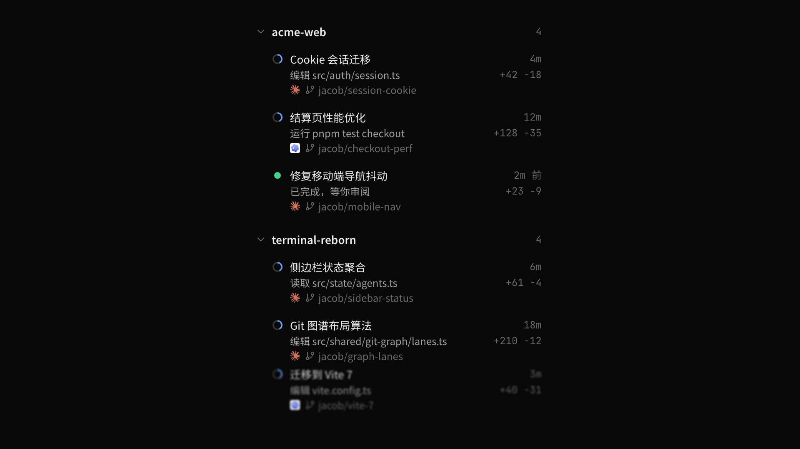
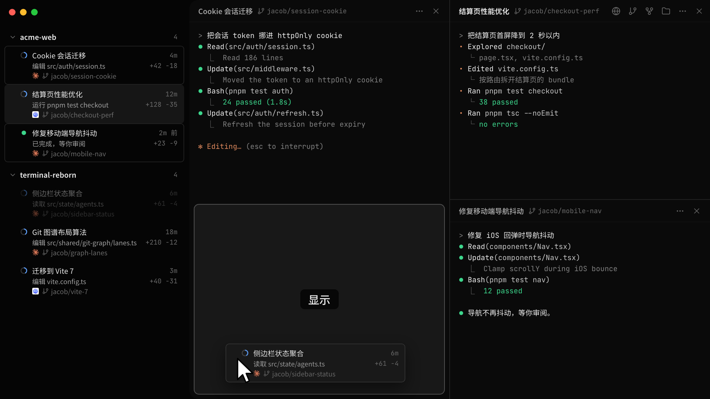
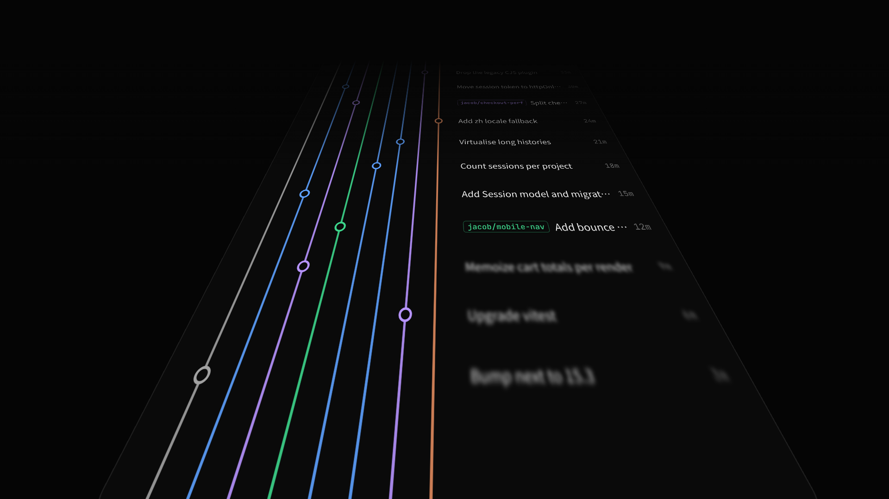
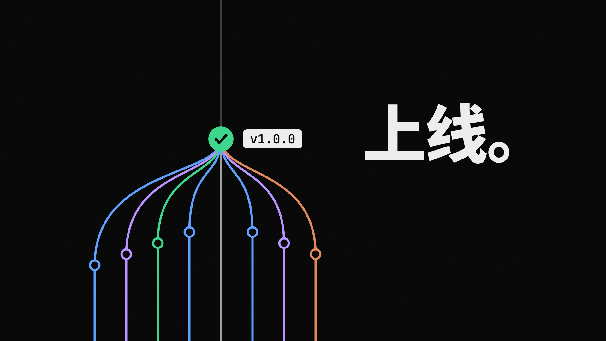
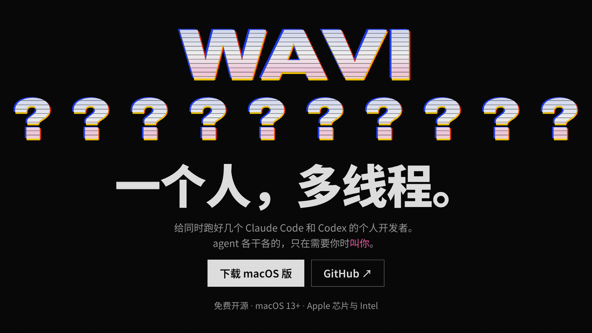

Wavi 发布片 F · 一个想法，多线程
40 秒 · 1920×1080 · 30 fps · 每个镜头一张关键帧

01: 想法
0.0 to 5.0s
一个问号跟着节拍跳两下，然后炸开，十个会话行在 3D 空间里翻滚着飞出来，离镜头近的带运动模糊。

02: 排好队
5.0 to 10.0s
飞出的行刹车、放平，一行接一行落进侧边栏，按项目分组；最后一行还在落位。

03: 分屏
10.0 to 20.0s
点开 Cookie 会话迁移，它占满终端；再把会话一行行拖进终端区，落点显示「显示」。这一帧是正在拖第四个。

04: Git 跑道
20.0 to 28.0s
点右上角的 Git 图标打开图谱；整个窗口向后倒成地面，图谱变成跑道，镜头贴着它往前冲，提交一个个从脚下掠过。

05: 上线
28.0 to 33.0s
八条分支依次并进 main，镜头升起俯视最后一个节点；v1.0.0 标签落上去，「上线。」落在旁边。

06: 片尾
33.0 to 40.0s
切到官网的 CRT 首屏：WAVI、十个问号、一个人，多线程。、下载按钮和说明，停 2.5 秒。